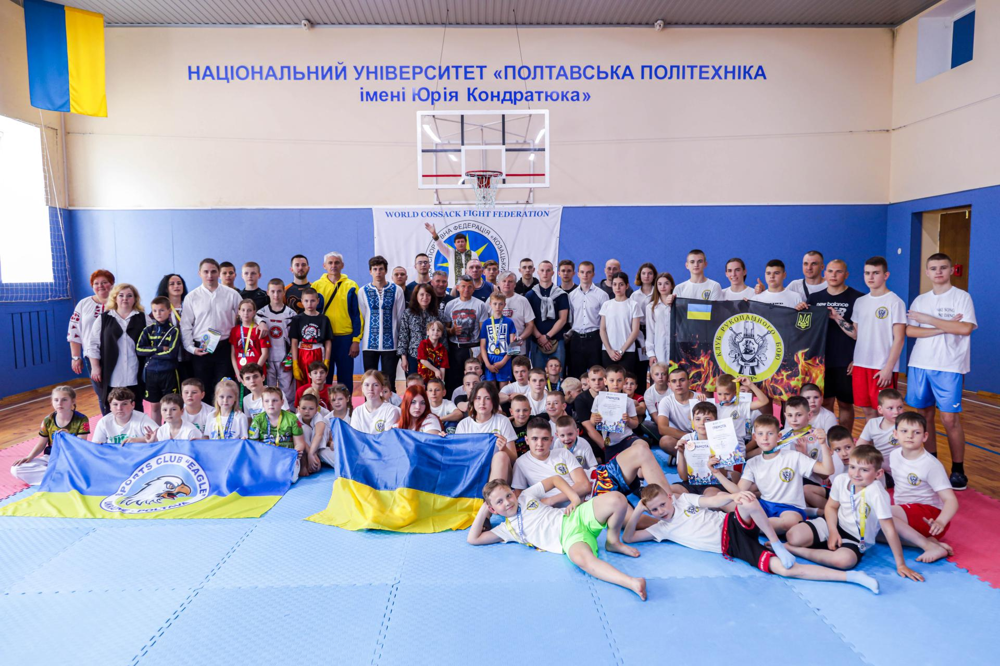

Команда Полтавської політехніки стала золотою призеркою XVIII Універсіади Полтавщини з гирьового спорту Команда Національного університету «Полтавська політехніка імені Юрія Кондратюка» стала золотою призеркою XVIII Універсіади Полтавщини з гирьового спорту. Спортсмени Полтавської політехніки посіли перше загальнокомандне місце, продемонструвавши відмінні результати у протистояннях з досвідченими суперниками.27 травня завершилися змагання XVIII Універсіади Полтавщини з гирьового спорту. Активними учасниками Універсіади стали спортсмени секції гирьового спорту – студенти факультету фізичної культури та спорту Національного університету «Полтавська політехніка імені Юрія Кондратюка», які вибороли перше загальнокомандне місце серед семи команд - учасниць, продемонструвавши хороші результати у протистояннях з досвідченими суперниками.
 На надсучасній спортивній базі Національного університету «Полтавська політехніка імені Юрія Кондратюка» відбувся перший Чемпіонат Полтавської області з Козацького Двобою. Учасниками змагань стали прихильники національного виду спорту з 9 спортивних клубів міста Полтави, Сумської, Харківської та Полтавської областей.23 травня у Полтаві на базі Національного університету «Полтавська політехніка імені Юрія Кондратюка» пройшли змагання Відкритого Чемпіонату Полтавської області з Козацького Двобою. У турнірі взяли участь 114 спортсменів, що представляли 9 клубів міста Полтави, Сумської, Харківської та Полтавської областей. Учасників змагань привітали почесні гості - декан факультету фізичної культури та спорту Полтавської політехніки, доктор педагогічних наук, професор Ліна Рибалко, голова Представництва громадської організації «Українська спортивна федерація Козацький Двобій» у Полтавської області Олександр Манюненко та голова Представництва громадської організації «Українська спортивна федерація «Козацький Двобій» у місті Полтаві Павло Коробов, які побажали видовищних поєдинків, нових спортивних звершень. Змагання розпочалися з традиційних урочистостей – рівняння на Держаний прапор та вшанування хвилиною мовчання військовослужбовців та мирних жителів, загиблих внаслідок російської агресії на території нашої країни. «Ваше бажання бути здоровими, популяризувати здоровий спосіб життя і спорт – це щоденна наполеглива робота над собою. Вітаю, шановні спортсмени, з відкриттям Чемпіонату та передаю слова вітання від ректора університету, керівника Спортивної студентської спілки України в Полтавській області та Української федерації учнівського спорту в Полтавській області Володимира Олександровича Онищенка.
Команда Національного університету «Полтавська політехніка імені Юрія Кондратюка» стала чемпіонкою XVIII Універсіади Полтавщини з пляжного футболу серед чоловіків. Спортсмени політехніки продемонстрували високий рівень підготовки та злагоджену командну гру, посівши перше призове місце серед команд закладів вищої освіти міста Полтави.Команда Національного університету «Полтавська політехніка імені Юрія Кондратюка» під керівництвом досвідченого тренера, старшого викладача кафедри фізичної культури та спорту Олексія Воробйова виборола першість XVIII Універсіади Полтавщини з пляжного футболу серед чоловіків. Спортсмени політехніки продемонстрували відмінну фізичну форму, високий рівень підготовки та злагоджену командну гру на футбольному майданчику, посівши перше призове місце серед команд закладів вищої освіти міста Полтави.Вітаємо чемпіонів XVIII Універсіади Полтавщини з пляжного футболу серед чоловіків, пишаємося вашими вагомими спортивними досягненнями! Бажаємо міцного здоров’я, натхнення, спортивного ентузіазму та нових яскравих перемог!
Команда Національного університету «Полтавська політехніка імені Юрія Кондратюка» стала срібною призеркою благодійного особисто-командного Кубку України серед науково-педагогічних представників ЗВО з більярду «Вільна піраміда». А представниця Полтавської політехніки, Заслужений майстер – спорту України зі спортивного більярду Анастасія Коваленко стала володаркою Кубка України з вільної піраміди серед ЗВО України.Упродовж 20-21 травня 2023 року в столичному більярдному клубі «Лідер» відбулися змагання особисто-командного Кубку України серед науково-педагогічних представників ЗВО з більярду «Вільна піраміда». Учасниками змагань стали понад 60 викладачів з 20 закладів вищої освіти. Серед головних завдань турніру – сприяння розвитку та пропаганда більярду серед науково-педагогічних працівників закладів вищої освіти України, залучення викладачів та науковців до регулярних занять спортом та допомога Збройним Силам України благодійними внесками учасників. Команду науково-педагогічних працівників Національного університету «Полтавська політехніка імені Юрія Кондратюка» на змаганнях представляли Заслужений майстер спорту України зі спортивного більярду, голова Відокремленого підрозділу «Федерація спортивного більярду України у Полтавській області», викладач кафедри фізичної культури та спорту Полтавської політехніки Анастасія Коваленко, старший викладач кафедри фізичної культури та спорту університету Тетяна Йопа, Сергій Кропивницький та Мкртіч Акопян.За результатами турніру у загальнокомандному заліку Полтавська політехніка посіла друге місце, а в рейтингу за 2023 рік серед закладів вищої освіти України – друге загальнокомандне місце, набравши 921 очко.
Команда Національного університету «Полтавська політехніка імені Юрія Кондратюка» стала чемпіонкою XVIII Універсіади Полтавщини з пляжного волейболу серед чоловіків. Спортсмени політехніки продемонстрували високий рівень підготовки та злагоджену командну гру на волейбольному майданчику.За сприяння Департаменту освіти і науки Полтавської обласної військової адміністрації 15 травня 2023 року на базі Полтавського державного аграрного університету пройшли змагання XVIII Універсіади Полтавщини з пляжного волейболу серед чоловіків. За головний спортивний трофей завзято змагалися студентські команди полтавських закладів вищої освіти, головний суддя змагань – Віктор Бондаренко. Команда Національного університету «Полтавська політехніка імені Юрія Кондратюка» під керівництвом досвідченого тренера, старшого викладача кафедри фізичної культури та спорту Андріана Остапова виборола першість XVIII Універсіади Полтавщини з пляжного волейболу серед чоловіків. Спортсмени політехніки продемонстрували відмінну фізичну форму, високий рівень підготовки та злагоджену командну гру на волейбольному майданчику.
Контакти
36011, м. Полтава, Першотравневий проспект, 24.
Телефон приймальної комісії:
+38 (0532)56-16-04
+38 (099)057-65-17
E-mail: vstup@nupp.edu.ua